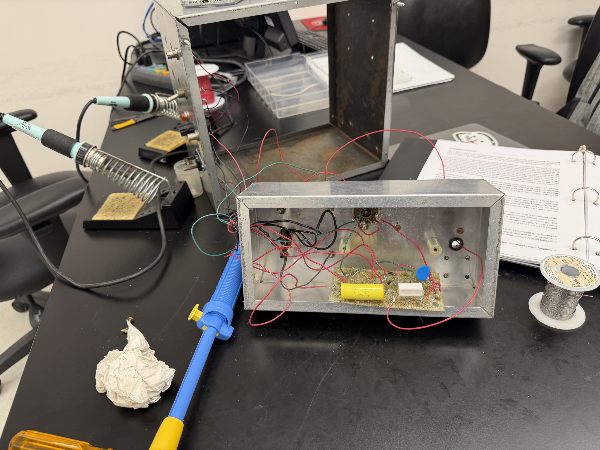
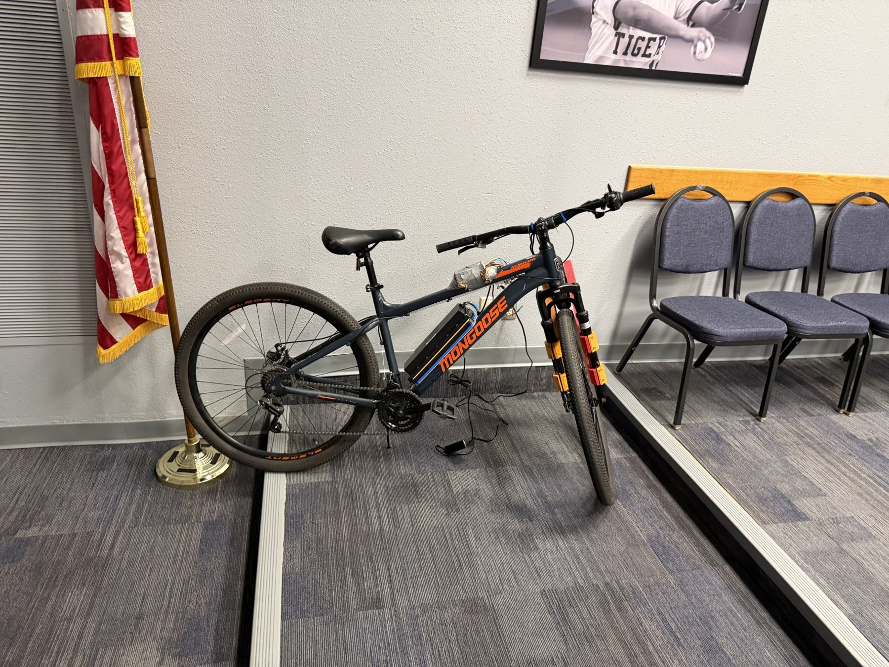
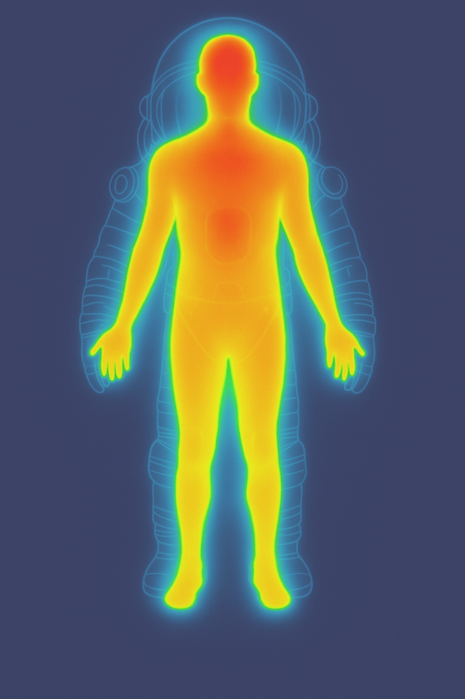

Portfolio / 01
Selected projects.
A collection of lab work, digital circuits, design concepts, and physical builds.

Cornell · ENGRI 1100
Nitrogen Laser — Pulse Amplifier Group ↗
Built the pulse amplifier with a team of three for a collaborative nitrogen laser lab project, developing skills in soldering, circuit layout, and subsystem integration.

Engineering Design & Development
Electric Bike Conversion Kit ↗
Led research, calculations, electrical diagrams, and cost optimization for a team conversion-kit project. Helped with wiring and CAD and reached out to an experienced local hobbyist.

Course projects · Multisim & hardware
PLTW Digital Electronics ↗
PLTW coursework in circuit design and digital logic, with original Multisim schematics, hardware demonstrations, and proficiency in breadboard construction and simulation.

Testing · Product analysis
Hair Dryer Reverse Engineering ↗
In a PLTW capstone team project, I helped analyze a hair dryer through performance testing and a systematic teardown.

Aerospace · Research · CAD
NASA HAS & Moonshot ↗
Lunar spacesuit research and CAD, hands-on aerospace prototypes, and the design lessons I brought to Team Foxtrot 02.
Sustainable design · CAD
Future City: Sustainable Ocean City ↗
I led the 3D modeling component of a team project exploring a sustainable ocean city. Our design considered renewable energy, resource management, and the structural challenges of a marine environment.
Design · Additive manufacturing
Custom Parts & Classroom Tools ↗
Through my school CAD club and work at Leap4ward, I designed and printed practical items including replacement parts, device holders, custom nameplates, and molecular model kits.
Spatial design · CAD
Leap4ward: Center Layout Model ↗
I developed a 3D model of a new learning center to help teachers explore classroom layouts before construction.
Rocketry · Flight
SNARKY: Model Rocket ↗
Through the Rocket Science Club, I designed and launched a model rocket named SNARKY. I also helped teach students about rocketry and flight paths.